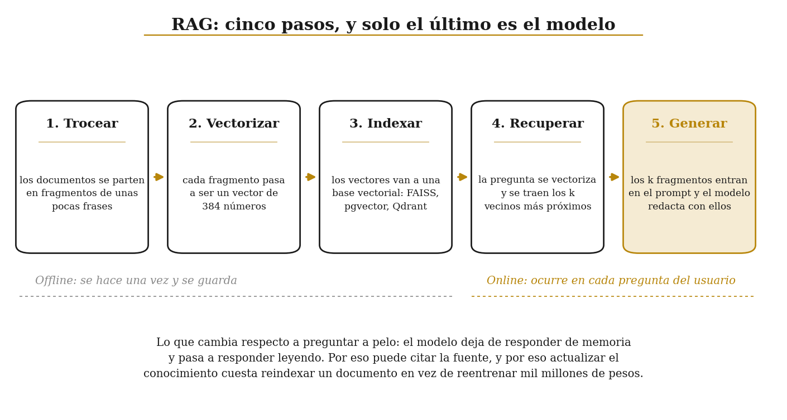
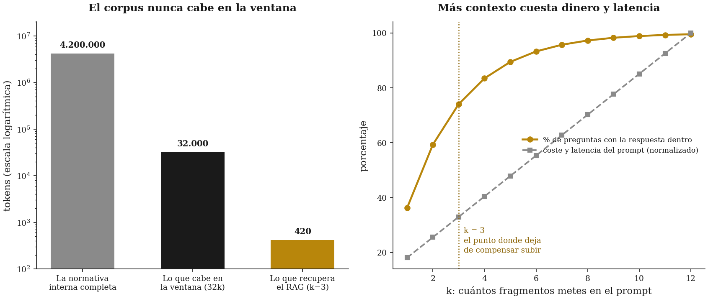

01 · RAG: que el modelo responda con tus documentos delante¶
Demo rápida — Deep Learning para Business Analytics · Comillas ICADE
En el cuaderno 00 le preguntamos a Qwen por la comisión de cajero de Banco Iberia y se la inventó. No por mala fe: nadie le enseñó nunca ese documento.
RAG (Retrieval-Augmented Generation, generación aumentada por recuperación) resuelve eso sin tocar un solo peso. La idea cabe en una frase: antes de responder, busca los fragmentos de tus documentos que hablan de la pregunta y métele esos fragmentos en el prompt.
Es la arquitectura que hay debajo de casi todos los "chatbots sobre nuestra documentación" que se venden hoy, y la primera que hay que probar cuando a un modelo le falta conocimiento.

1. Por qué no basta con meter todo el corpus en el prompt¶
La pregunta sensata es: si el modelo tiene 32.000 tokens de ventana, ¿por qué no le pego la normativa entera y me ahorro la recuperación?
Tres razones, en orden de importancia:
- No cabe. La normativa completa de un banco mediano son millones de tokens. La de Banco Iberia, en esta demo de juguete, cabe; la de un banco de verdad, no.
- Cuesta dinero y tiempo. El coste de una llamada es lineal en los tokens de entrada, y la latencia de la atención crece con el cuadrado de la longitud.
- Funciona peor. Un modelo con 30.000 tokens de contexto irrelevante encuentra peor el dato que uno con 400 tokens pertinentes. Es el fenómeno de lost in the middle: lo que está por el centro de un contexto largo pesa menos que lo que está al principio y al final.

Antes de nada: preparar el ordenador¶
Ejecuta la celda de abajo antes que ninguna otra. Mira qué sistema operativo tienes y qué hay ya instalado, y descarga solo lo que falte: funciona igual en Windows, en macOS y en Linux, y no hace falta que instales nada a mano.
La primera vez tarda unos minutos, porque se baja PyTorch. Las siguientes termina en un segundo. Se puede ejecutar tantas veces como quieras.
Si algo falla, cambia instalar() por instalar(verboso=True), vuelve a
ejecutarla y enseña lo que imprima.
# Prepara el entorno: comprueba lo que ya tienes e instala únicamente lo que
# falte. Si ya está todo, no descarga nada.
import sys
from pathlib import Path
_aqui = Path.cwd()
_candidatas = [_aqui, *_aqui.parents, # lo normal
*(f.parents[1] for f in _aqui.glob("*/comun/entorno.py")),
*(f.parents[1] for f in _aqui.glob("*/*/comun/entorno.py"))]
_raiz = next((p for p in _candidatas
if (p / "comun" / "entorno.py").is_file()), None)
if _raiz is None:
raise RuntimeError(
"No encuentro la carpeta 'comun'. Descomprime el zip entero y abre "
"este cuaderno desde dentro de la carpeta demo_rapida.")
sys.path.insert(0, str(_raiz))
from comun.entorno import instalar, preparar
instalar() # ¿algo ha fallado? -> instalar(verboso=True)
_carpeta = preparar() # deja las rutas del cuaderno listas
Entorno listo, no hay nada que instalar. (Linux 6.8.0-138-generic · Python 3.10.12)
import numpy as np
import torch
from comun.config import (MODELO_CHARLA, MODELO_EMBED, MODELO_EMBED_ALT, DTYPE_CHARLA,
fijar_semilla, cronometro, resumen_entorno)
from comun.corpus import CORPUS, PREGUNTAS, Fragmento
resumen_entorno()
fijar_semilla()
print(f"\nFragmentos en el corpus: {len(CORPUS)}")
print(f"Documentos distintos : {len(set(f.documento for f in CORPUS))}\n")
for f in CORPUS[:3]:
print(f"[{f.id}] {f.cita}")
print(f" {f.texto[:110]}...\n")
Sistema : Linux 6.8.0-138-generic (x86_64)
Python : 3.10.12
PyTorch : 2.14.1+cpu
Dispositivo : cpu
Hilos de CPU : 8
Sin GPU: todo funciona igual, solo que más despacio.
Semilla : 0
Fragmentos en el corpus: 16
Documentos distintos : 6
[HIP-01] Manual de Riesgo Hipotecario, 1. Límites de concesión (v. 2026-01-15)
Banco Iberia concede préstamos hipotecarios hasta un 80 % del valor de tasación de la vivienda habitual y hast...
[HIP-02] Manual de Riesgo Hipotecario, 2. Plazos y edad (v. 2026-01-15)
El plazo máximo de amortización es de 30 años. La suma de la edad del titular más el plazo solicitado no puede...
[HIP-03] Manual de Riesgo Hipotecario, 3. Tipos aplicables (v. 2026-01-15)
El tipo fijo de referencia para hipotecas a 30 años es del 3,10 % TAE para clientes con nómina domiciliada y d...
2. Paso 1: trocear¶
El corpus de esta demo ya viene troceado a mano, un fragmento por apartado de normativa. En un proyecto real este paso se lleva la mitad del trabajo y casi todos los disgustos.
El tamaño del trozo es un compromiso con dos extremos malos:
- Trozos pequeños (una frase): el vector representa bien esa frase, pero la respuesta queda partida entre varios trozos y el modelo recibe un cacho sin contexto.
- Trozos grandes (un capítulo): no se pierde contexto, pero el vector es un promedio de ocho temas distintos y no se parece a ninguna pregunta en concreto.
En la práctica se tira de 200 a 500 tokens por trozo, con solapamiento de un 10-20 % para que una frase que cae en la frontera aparezca entera en alguno de los dos.
def trocear(texto: str, tam: int = 40, solape: int = 10) -> list[str]:
"""Trocea por palabras con solapamiento. Didáctico; en producción se trocea
por tokens y respetando los límites de párrafo y de frase."""
palabras = texto.split()
paso = max(1, tam - solape)
trozos = [" ".join(palabras[i:i + tam]) for i in range(0, len(palabras), paso)]
return [t for t in trozos if len(t.split()) > solape // 2]
largo = " ".join(f.texto for f in CORPUS[:2])
for i, t in enumerate(trocear(largo, tam=25, solape=8)):
print(f"trozo {i}: {t[:100]}...")
print("\nFíjate en que el final de un trozo vuelve a salir al principio del siguiente.")
print("Ese solapamiento es lo que evita cortar una cifra de su unidad.")
trozo 0: Banco Iberia concede préstamos hipotecarios hasta un 80 % del valor de tasación de la vivienda habit... trozo 1: y hasta un 65 % en segunda residencia. La cuota mensual resultante, sumada a cualquier otra deuda de... trozo 2: del solicitante, no podrá superar el 35 % de sus ingresos netos mensuales. Superar ese umbral exige ... trozo 3: autorización del Comité de Riesgos. El plazo máximo de amortización es de 30 años. La suma de la eda... trozo 4: la edad del titular más el plazo solicitado no puede exceder de 75 años. Para titulares de más de 60... trozo 5: más de 60 años se exige un seguro de vida vinculado con cobertura igual al capital pendiente.... Fíjate en que el final de un trozo vuelve a salir al principio del siguiente. Ese solapamiento es lo que evita cortar una cifra de su unidad.
3. Paso 2: vectorizar¶
Un encoder de frases convierte un texto en un vector de números reales (aquí, 384) construido para que textos con el mismo significado caigan cerca y textos de temas distintos caigan lejos. Eso lo distingue de un buscador por palabras: "¿cuánto me cobráis por sacar pasta en un cajero?" no comparte casi ninguna palabra con el artículo de la normativa, y aun así sus vectores quedan próximos.
La familia e5 exige dos prefijos: "query: " en la pregunta y "passage: " en los documentos.
Son parte de cómo se entrenó el modelo. Olvidarlos no da error: solo recupera peor.
from sentence_transformers import SentenceTransformer
with cronometro("cargar el encoder"):
enc = SentenceTransformer(MODELO_EMBED)
dim = enc.get_sentence_embedding_dimension()
print(f"\nModelo : {MODELO_EMBED}")
print(f"Dimensión : {dim}")
with cronometro("vectorizar el corpus"):
E = enc.encode([f"passage: {f.texto}" for f in CORPUS],
normalize_embeddings=True, show_progress_bar=False)
print(f"\nMatriz del corpus: {E.shape} ({E.shape[0]} fragmentos × {E.shape[1]} dimensiones)")
print(f"Norma de cada vector: {np.linalg.norm(E, axis=1)[:3].round(4)} (normalizados a 1)")
print(f"\nLos 8 primeros números del fragmento HIP-01:\n {E[0][:8].round(3)}")
/tmp/venv_demo/lib/python3.10/site-packages/tqdm/auto.py:21: TqdmWarning: IProgress not found. Please update jupyter and ipywidgets. See https://ipywidgets.readthedocs.io/en/stable/user_install.html from .autonotebook import tqdm as notebook_tqdm
[cargar el encoder] 3.6 s Modelo : intfloat/multilingual-e5-small Dimensión : 384
/tmp/ipykernel_54526/4088034145.py:6: FutureWarning: The `get_sentence_embedding_dimension` method has been renamed to `get_embedding_dimension`. dim = enc.get_sentence_embedding_dimension()
[vectorizar el corpus] 0.2 s Matriz del corpus: (16, 384) (16 fragmentos × 384 dimensiones) Norma de cada vector: [1. 1. 1.] (normalizados a 1) Los 8 primeros números del fragmento HIP-01: [ 0.052 0.001 -0.027 -0.116 0.052 -0.075 0.02 0.038]
Con los vectores normalizados a norma 1, el producto escalar es exactamente el coseno del ángulo entre ellos. Por eso normalizamos: convierte una multiplicación de matrices en una búsqueda por similitud semántica.
# Mirar el espacio. Proyectamos los 384 números a 2 dimensiones con PCA.
import matplotlib.pyplot as plt
from sklearn.decomposition import PCA
P = PCA(n_components=2, random_state=0).fit_transform(E)
docs = sorted(set(f.documento for f in CORPUS))
colores = ["#B8860B", "#1A1A1A", "#8A8A8A", "#8C6508", "#D9C28A"]
fig, ax = plt.subplots(figsize=(10, 6))
for d, c in zip(docs, colores):
idx = [i for i, f in enumerate(CORPUS) if f.documento == d]
ax.scatter(P[idx, 0], P[idx, 1], s=150, color=c, label=d, zorder=3,
edgecolor="white", linewidth=1.5)
for i in idx:
ax.annotate(CORPUS[i].id, (P[i, 0], P[i, 1]), fontsize=8,
xytext=(0, 12), textcoords="offset points", ha="center")
ax.set_title("Los 16 fragmentos, proyectados de 384 dimensiones a 2 (PCA)",
fontsize=12, fontweight="bold")
ax.set_xlabel("componente principal 1"); ax.set_ylabel("componente principal 2")
ax.legend(fontsize=8, loc="best", frameon=False)
ax.spines[["top", "right"]].set_visible(False)
plt.tight_layout(); plt.show()
print("Los fragmentos del mismo documento tienden a agruparse, y nadie se lo ha dicho:")
print("el encoder solo ha visto el texto. Eso es lo que significa 'espacio semántico'.")
![No description has been provided for this image]()
Los fragmentos del mismo documento tienden a agruparse, y nadie se lo ha dicho: el encoder solo ha visto el texto. Eso es lo que significa 'espacio semántico'.
4. Pasos 3 y 4: indexar y recuperar¶
Con 16 fragmentos, el índice es una matriz y la búsqueda es un producto escalar. Lo escribimos así primero porque se ve entero en cuatro líneas.
def recuperar(pregunta: str, k: int = 3) -> list[tuple[Fragmento, float]]:
"""Devuelve los k fragmentos más parecidos a la pregunta, con su similitud."""
v = enc.encode([f"query: {pregunta}"], normalize_embeddings=True)
sims = (E @ v.T).ravel() # coseno, porque todo está normalizado
orden = np.argsort(-sims)[:k]
return [(CORPUS[i], float(sims[i])) for i in orden]
pregunta = "¿Qué comisión tiene sacar dinero en un cajero de otro banco en España?"
print(f"Pregunta: {pregunta}\n")
for frag, s in recuperar(pregunta, k=3):
print(f" {s:.3f} [{frag.id}] {frag.documento} — {frag.seccion}")
print(f" {frag.texto[:95]}...\n")
Pregunta: ¿Qué comisión tiene sacar dinero en un cajero de otro banco en España?
0.893 [TAR-02] Catálogo de Productos Minoristas — 5. Disposiciones en efectivo
La retirada de efectivo en cajeros de la red propia es gratuita. En cajeros de otras entidades ...
0.836 [CUE-02] Catálogo de Productos Minoristas — 2. Descubiertos
Los descubiertos en cuenta devengan un interés nominal del 18 % anual, más una comisión de recl...
0.832 [ATC-01] Manual de Atención al Cliente — 1. Tono y trato
Toda comunicación escrita con el cliente se redacta en español neutro, en segunda persona del s...
# La versión de producción: FAISS. Misma matemática, estructuras de datos que
# aguantan millones de vectores y búsqueda aproximada por debajo.
#
# FAISS no publica versión para todos los sistemas (en macOS pide una versión
# reciente). Si no está, el resultado es el mismo con numpy: este apartado
# enseña la herramienta, no cambia ningún número.
v = enc.encode([f"query: {pregunta}"], normalize_embeddings=True).astype("float32")
try:
import faiss
indice = faiss.IndexFlatIP(dim) # IP = Inner Product = coseno si está normalizado
indice.add(E.astype("float32"))
print(f"Vectores en el índice FAISS: {indice.ntotal}")
sims, pos = indice.search(v, 3)
sims, pos = sims[0], pos[0]
except ImportError:
print("FAISS no está disponible en este sistema; mismo cálculo con numpy.")
puntuaciones = (E.astype("float32") @ v.T).ravel()
pos = np.argsort(-puntuaciones)[:3]
sims = puntuaciones[pos]
print("\nMismo resultado que a mano:")
for s, i in zip(sims, pos):
print(f" {s:.3f} [{CORPUS[i].id}]")
print("\nCon 16 fragmentos sobra numpy. A partir de ~100.000 vectores hace falta")
print("un índice de verdad (FAISS, pgvector, Qdrant, Weaviate) o la búsqueda")
print("se come la latencia entera de la petición.")
Vectores en el índice FAISS: 16 Mismo resultado que a mano: 0.893 [TAR-02] 0.836 [CUE-02] 0.832 [ATC-01] Con 16 fragmentos sobra numpy. A partir de ~100.000 vectores hace falta un índice de verdad (FAISS, pgvector, Qdrant, Weaviate) o la búsqueda se come la latencia entera de la petición.
5. Medir la recuperación antes de mirar la generación¶
Este es el paso que casi nadie da y es el que decide si tu RAG funciona. Si el fragmento correcto no entra en el prompt, el modelo no tiene de dónde sacar la respuesta, por bueno que sea.
Dos métricas:
- acierto@1: el fragmento correcto es el primero.
- acierto@3: el fragmento correcto está entre los tres primeros.
Y una comparación que cambia el resultado más que cualquier otra decisión del sistema: qué encoder usas.
def evaluar(encoder, prefijo_q="", prefijo_p="", k=3):
"""acierto@1 y acierto@k de un encoder sobre las preguntas de referencia."""
M = encoder.encode([prefijo_p + f.texto for f in CORPUS],
normalize_embeddings=True, show_progress_bar=False)
a1 = ak = 0
detalle = []
for q, bueno in PREGUNTAS:
v = encoder.encode([prefijo_q + q], normalize_embeddings=True)
orden = np.argsort(-(M @ v.T).ravel())[:k]
ids = [CORPUS[i].id for i in orden]
a1 += ids[0] == bueno
ak += bueno in ids
detalle.append((q, ids, bueno))
return a1 / len(PREGUNTAS), ak / len(PREGUNTAS), detalle
with cronometro("evaluar e5-small"):
a1_e5, a3_e5, det = evaluar(enc, "query: ", "passage: ")
print(f"\n{MODELO_EMBED}")
print(f" acierto@1 = {a1_e5:.0%} acierto@3 = {a3_e5:.0%}\n")
for q, ids, bueno in det:
marca = "ok " if ids[0] == bueno else ("~ " if bueno in ids else "FALLA")
print(f" {marca} {q[:54]:56s} top3={ids} esperado={bueno}")
[evaluar e5-small] 0.3 s intfloat/multilingual-e5-small acierto@1 = 83% acierto@3 = 100% ok ¿Cuánto puedo pedir como máximo para mi vivienda habit top3=['HIP-01', 'HIP-02', 'HIP-03'] esperado=HIP-01 ok ¿Qué comisión tiene sacar dinero en un cajero de otro top3=['TAR-02', 'CUE-02', 'ATC-01'] esperado=TAR-02 ~ Me han hecho un cargo que no reconozco, ¿cuánto tiempo top3=['ATC-02', 'FRA-01', 'LOP-01'] esperado=FRA-01 ok ¿Qué coste tiene la gama de fondos indexados del banco top3=['INV-02', 'CUE-02', 'HIP-04'] esperado=INV-02 ok ¿Puedo mandar datos de clientes a ChatGPT? top3=['LOP-02', 'ATC-02', 'LOP-01'] esperado=LOP-02 ok ¿Quién paga la notaría al firmar la hipoteca? top3=['HIP-04', 'HIP-01', 'HIP-03'] esperado=HIP-04
# El mismo corpus con otro encoder. Mismo código, mismo índice, misma métrica.
with cronometro("cargar y evaluar el encoder alternativo"):
enc_alt = SentenceTransformer(MODELO_EMBED_ALT)
a1_alt, a3_alt, _ = evaluar(enc_alt) # este no usa prefijos
print(f"\n{'encoder':56s} {'@1':>6s} {'@3':>6s}")
print("-" * 72)
print(f"{MODELO_EMBED:56s} {a1_e5:6.0%} {a3_e5:6.0%}")
print(f"{MODELO_EMBED_ALT:56s} {a1_alt:6.0%} {a3_alt:6.0%}")
print("\nMismo tamaño de vector (384), misma velocidad, resultado muy distinto.")
print("Cambiar de encoder es la optimización más barata de un RAG, y la primera")
print("que hay que probar antes de tocar el prompt o el modelo generador.")
del enc_alt # libera memoria: en CPU conviene no acumular modelos
[cargar y evaluar el encoder alternativo] 3.9 s encoder @1 @3 ------------------------------------------------------------------------ intfloat/multilingual-e5-small 83% 100% sentence-transformers/paraphrase-multilingual-MiniLM-L12-v2 17% 100% Mismo tamaño de vector (384), misma velocidad, resultado muy distinto. Cambiar de encoder es la optimización más barata de un RAG, y la primera que hay que probar antes de tocar el prompt o el modelo generador.
Fíjate también en la distancia entre @1 y @3. Cuando @3 es mucho mejor que @1, el
recuperador sabe dónde está la respuesta pero no la pone primera. Eso es exactamente el trabajo de
un reranker: un modelo más caro que mira la pregunta y cada candidato juntos y los reordena.
Se aplica solo a los 20 candidatos que trae el buscador rápido, así que el coste es asumible.
6. Paso 5: generar con el contexto delante¶
Ya tenemos los fragmentos. Ahora se montan en el prompt con tres instrucciones que no son opcionales en producción:
- responde solo con lo que hay en el contexto;
- cita la fuente de cada dato;
- si el contexto no contiene la respuesta, dilo en vez de rellenar.
La tercera es la que separa un RAG que se puede desplegar de uno que no.
from transformers import AutoModelForCausalLM, AutoTokenizer
with cronometro("cargar Qwen2.5-1.5B"):
tok = AutoTokenizer.from_pretrained(MODELO_CHARLA)
mod = AutoModelForCausalLM.from_pretrained(MODELO_CHARLA, dtype=DTYPE_CHARLA,
low_cpu_mem_usage=True)
SISTEMA_RAG = (
"Eres el asistente de normativa interna de Banco Iberia.\n"
"Responde ÚNICAMENTE con la información del CONTEXTO que te doy.\n"
"Cita siempre el identificador del fragmento del que sacas cada dato, así: [HIP-01].\n"
"Si el CONTEXTO no contiene la respuesta, responde exactamente: "
"'No está en la documentación que manejo.' y no añadas nada más.\n"
"Responde en español, en dos o tres frases."
)
def responder(pregunta, k=3, con_contexto=True, max_new_tokens=130):
"""Pregunta al modelo con (o sin) los k fragmentos recuperados."""
if con_contexto:
trozos = recuperar(pregunta, k)
contexto = "\n\n".join(f"[{f.id}] {f.texto}" for f, _ in trozos)
usuario = f"CONTEXTO:\n{contexto}\n\nPREGUNTA: {pregunta}"
sistema = SISTEMA_RAG
else:
trozos = []
usuario = pregunta
sistema = "Eres el asistente de Banco Iberia. Responde en dos o tres frases."
msgs = [{"role": "system", "content": sistema}, {"role": "user", "content": usuario}]
texto = tok.apply_chat_template(msgs, add_generation_prompt=True, tokenize=False)
ent = tok(texto, return_tensors="pt", add_special_tokens=False).to(mod.device)
with torch.no_grad():
out = mod.generate(**ent, max_new_tokens=max_new_tokens, do_sample=False,
pad_token_id=tok.eos_token_id)
resp = tok.decode(out[0, ent.input_ids.shape[1]:], skip_special_tokens=True).strip()
return resp, trozos, ent.input_ids.shape[1]
[cargar Qwen2.5-1.5B] 1.3 s
pregunta = "¿Qué comisión tiene sacar dinero en un cajero de otro banco en España?"
print("=" * 78)
print("SIN RAG (el modelo tira de memoria)")
print("=" * 78)
with cronometro("generar"):
r, _, n = responder(pregunta, con_contexto=False)
print(f"[{n} tokens de prompt]\n{r}\n")
print("=" * 78)
print("CON RAG (el modelo lee)")
print("=" * 78)
with cronometro("generar"):
r, trozos, n = responder(pregunta, k=3)
print(f"[{n} tokens de prompt]\n{r}\n")
print("Fuentes que se le dieron:")
for f, s in trozos:
print(f" [{f.id}] {f.cita} (similitud {s:.3f})")
The following generation flags are not valid and may be ignored: ['temperature', 'top_p', 'top_k']. Set `TRANSFORMERS_VERBOSITY=info` for more details.
============================================================================== SIN RAG (el modelo tira de memoria) ==============================================================================
[generar] 8.2 s [53 tokens de prompt] La comisión para retirar dinero en un cajero automático (CA) de otro banco en España es de 0,5 euros por transacción. Este coste se aplica a todas las operaciones realizadas en los CA de otros bancos dentro del país. Sin embargo, siempre hay que tener en cuenta cualquier tarifa adicional que pueda aplicarse por parte del banco desde el cual se está retirando la cantidad. ============================================================================== CON RAG (el modelo lee) ==============================================================================
[generar] 14.2 s [372 tokens de prompt] La comisión para retirar efectivo en un cajero de otra entidad bancaria dentro de España es de 1,95 euros por operación. Fuentes que se le dieron: [TAR-02] Catálogo de Productos Minoristas, 5. Disposiciones en efectivo (v. 2026-02-01) (similitud 0.893) [CUE-02] Catálogo de Productos Minoristas, 2. Descubiertos (v. 2026-02-01) (similitud 0.836) [ATC-01] Manual de Atención al Cliente, 1. Tono y trato (v. 2026-02-20) (similitud 0.832)
La respuesta correcta es 1,95 € por operación, y ahora el modelo puede citar de dónde sale. Ese identificador entre corchetes es lo que convierte la demo en un producto: el asesor que recibe la respuesta puede abrir el documento y comprobarla. Un RAG sin citas es un generador de afirmaciones sin responsable.
Fíjate también en el coste: el prompt con contexto ocupa unas tres veces más tokens. Eso es el precio de RAG, y se paga en cada pregunta.
# Las seis preguntas de referencia, de una tacada.
for q, bueno in PREGUNTAS:
r, trozos, _ = responder(q, k=3, max_new_tokens=90)
ids = [f.id for f, _ in trozos]
print(f"\nP: {q}")
print(f" recuperado: {ids} (el bueno era {bueno})")
print(f"R: {r[:260]}")
P: ¿Cuánto puedo pedir como máximo para mi vivienda habitual? recuperado: ['HIP-01', 'HIP-02', 'HIP-03'] (el bueno era HIP-01) R: Según el contexto proporcionado, puedes solicitar hasta un 80% del valor de tasación de tu vivienda habitual. Este límite se refleja en el identificador HIP-01, donde se especifica que "Banco Iberia concede préstamos hipotecarios hasta un 80 % del valor de tas
P: ¿Qué comisión tiene sacar dinero en un cajero de otro banco en España? recuperado: ['TAR-02', 'CUE-02', 'ATC-01'] (el bueno era TAR-02) R: La comisión para retirar efectivo en un cajero de otra entidad bancaria dentro de España es de 1,95 euros por operación.
P: Me han hecho un cargo que no reconozco, ¿cuánto tiempo tengo para reclamar? recuperado: ['ATC-02', 'FRA-01', 'LOP-01'] (el bueno era FRA-01) R: Según [FRA-01], si el cliente ha recibido un cargo que no reconoce, tiene 13 meses desde el cargo para realizar su reclamación. Banco Iberia debe abonar el importe provisionalmente en un plazo máximo de 10 días hábiles desde la notificación, salvo que existan
P: ¿Qué coste tiene la gama de fondos indexados del banco? recuperado: ['INV-02', 'CUE-02', 'HIP-04'] (el bueno era INV-02) R: La gama de fondos indexados del banco Iberia tiene un costo total de aproximadamente 350 euros para la tasación y la copia de la escritura, según lo establecido en el HIP-04. Además, el cliente debe pagar una tasación adicional de 350 euros. En cuanto a otros
P: ¿Puedo mandar datos de clientes a ChatGPT? recuperado: ['LOP-02', 'ATC-02', 'LOP-01'] (el bueno era LOP-02) R: No está permitido enviar datos personales de clientes a servicios de inteligencia artificial alojados fuera del espacio económico europeo. Los modelos desplegados en la infraestructura propia del banco deben registrar cada consulta en el log de auditoría duran
P: ¿Quién paga la notaría al firmar la hipoteca? recuperado: ['HIP-04', 'HIP-01', 'HIP-03'] (el bueno era HIP-04) R: Según el contexto proporcionado, el cliente paga la notaría al firmar la hipoteca. [HIP-04]
7. El caso que de verdad importa: cuando la respuesta no está¶
Un RAG se evalúa por lo que hace cuando falla la recuperación. Preguntemos algo que no está en ningún fragmento del corpus.
fuera = [
"¿Cuántas oficinas tiene Banco Iberia en Galicia?",
"¿Qué rentabilidad dio el fondo Iberia Índice en 2025?",
"¿Puedo pagar con el móvil en el metro de Madrid?",
]
for q in fuera:
r, trozos, _ = responder(q, k=3, max_new_tokens=70)
print(f"\nP: {q}")
print(f" recuperado (nada pertinente): {[f.id for f, _ in trozos]}")
print(f"R: {r[:220]}")
P: ¿Cuántas oficinas tiene Banco Iberia en Galicia? recuperado (nada pertinente): ['HIP-04', 'INV-02', 'FRA-01'] R: No está en la documentación que manejo.
P: ¿Qué rentabilidad dio el fondo Iberia Índice en 2025? recuperado (nada pertinente): ['INV-02', 'CUE-01', 'TAR-01'] R: No está en la documentación que manejo.
P: ¿Puedo pagar con el móvil en el metro de Madrid? recuperado (nada pertinente): ['TAR-01', 'TAR-02', 'FRA-01'] R: No está en la documentación que manejo.
Aquí el modelo se porta: contesta la frase exacta en los tres casos. Con tres preguntas y un modelo concreto eso no es una garantía, pero sí dice que la instrucción negativa, bien puesta en el mensaje de sistema, funciona incluso con 1,5 B.
El fallo de este cuaderno está en otro sitio, y está en la celda anterior. Vuelve a la pregunta
sobre el coste de los fondos indexados. El recuperador trajo INV-02 el primero, que es el
fragmento correcto y dice "0,32 % anual". Y el modelo respondió 350 euros, que es el coste de
la tasación de una hipoteca y sale de HIP-04, el tercer fragmento del contexto.
Ese es el modo de fallo que más daño hace en producción: recuperación correcta, generación equivocada. El fragmento bueno estaba delante y el modelo cogió el número de otro. No lo arregla mejorar el buscador, porque el buscador acertó.
Las defensas, en orden de coste:
- Bajar k. Con
k=1este error desaparece, porque no hay otro número que coger. A cambio, pierdes las preguntas cuya respuesta está repartida entre dos fragmentos. - Verificación posterior: un segundo paso comprueba que cada cifra de la respuesta aparece literalmente en algún fragmento recuperado. Es barato y pilla justo este caso.
- Modelo más grande. La fidelidad al contexto escala muy bien con el tamaño.
8. El umbral de similitud, y por qué aquí no funciona¶
La defensa que todo el mundo propone primero es un umbral: si el mejor fragmento no se parece lo suficiente a la pregunta, ni se llama al modelo. Vamos a implementarlo y a mirar los números antes de creérnoslo.
UMBRAL = 0.80
print(f"{'pregunta':58s} {'mejor sim':>10s} {'decisión':>10s} ¿debería responder?")
print("-" * 104)
for q, _ in PREGUNTAS:
s = recuperar(q, 1)[0][1]
print(f"{q[:56]:58s} {s:10.3f} {'responde' if s >= UMBRAL else 'RECHAZA':>10s} sí")
for q in fuera:
s = recuperar(q, 1)[0][1]
print(f"{q[:56]:58s} {s:10.3f} {'responde' if s >= UMBRAL else 'RECHAZA':>10s} NO")
dentro = [recuperar(q, 1)[0][1] for q, _ in PREGUNTAS]
afuera = [recuperar(q, 1)[0][1] for q in fuera]
print(f"\nsimilitud de las preguntas que SÍ están: {min(dentro):.3f} a {max(dentro):.3f}")
print(f"similitud de las que NO están : {min(afuera):.3f} a {max(afuera):.3f}")
print("\nLos dos rangos se solapan. No existe ningún umbral que separe los dos grupos.")
pregunta mejor sim decisión ¿debería responder? -------------------------------------------------------------------------------------------------------- ¿Cuánto puedo pedir como máximo para mi vivienda habitua 0.862 responde sí ¿Qué comisión tiene sacar dinero en un cajero de otro ba 0.893 responde sí Me han hecho un cargo que no reconozco, ¿cuánto tiempo t 0.881 responde sí ¿Qué coste tiene la gama de fondos indexados del banco? 0.843 responde sí ¿Puedo mandar datos de clientes a ChatGPT? 0.834 responde sí ¿Quién paga la notaría al firmar la hipoteca? 0.847 responde sí ¿Cuántas oficinas tiene Banco Iberia en Galicia? 0.852 responde NO ¿Qué rentabilidad dio el fondo Iberia Índice en 2025? 0.880 responde NO ¿Puedo pagar con el móvil en el metro de Madrid? 0.791 RECHAZA NO similitud de las preguntas que SÍ están: 0.834 a 0.893 similitud de las que NO están : 0.791 a 0.880 Los dos rangos se solapan. No existe ningún umbral que separe los dos grupos.
Los dos rangos se pisan. Hay preguntas cuya respuesta está en el corpus con similitud 0,834 y preguntas cuya respuesta no está con similitud 0,880. Ningún umbral los separa.
La causa tiene nombre. Los modelos de la familia e5 se entrenan con una temperatura que comprime
todas las similitudes hacia la parte alta del rango: casi cualquier par de textos en español sobre
un banco sale por encima de 0,78. El coseno de e5 ordena bien y calibra mal, y son dos cosas
distintas. Es exactamente por eso que el apartado 5 medía acierto@1, que solo mira el orden, y
no la similitud absoluta.
Lo que sí funciona, en orden de coste:
- Calibrar sobre el propio conjunto, no sobre un número redondo. En lugar de "0,80", usar el percentil de las similitudes del corpus consigo mismo, o normalizar restando la similitud media de esa pregunta con todos los fragmentos. El ejercicio 1.1 va de esto.
- Un reranker: un modelo que lee la pregunta y el candidato juntos y da una puntuación de pertinencia. Sus puntuaciones sí están calibradas, porque se entrenan con etiquetas binarias.
- El propio modelo como juez: una llamada previa que pregunte "¿contiene este fragmento la respuesta a esta pregunta? Responde SÍ o NO". Cuesta una llamada más y funciona bien.
La moraleja general vale para cualquier sistema de recuperación: una puntuación que sirve para ordenar no sirve necesariamente para decidir. Antes de poner un umbral, dibuja los dos histogramas.
8. Ejercicios¶
1.1 Arregla el umbral. Prueba estas tres puntuaciones alternativas y dibuja, para cada una, los histogramas de las 6 preguntas que están en el corpus y las 3 que no: (a) la similitud en bruto; (b) la similitud del mejor menos la media de las 16; (c) la similitud del mejor menos la del segundo. ¿Alguna separa los dos grupos? Amplía a 20 preguntas de cada tipo antes de concluir.
1.2 Cambia k a 1, 3, 5 y 10 en la pregunta sobre la notaría. Mide tokens de prompt, tiempo
de generación y si la respuesta sigue siendo correcta. Reproduce la figura 01_ventana.png con
tus propios números.
1.3 El corpus viene troceado por apartados. Vuelve a trocearlo con trocear(..., tam=15)
sobre el texto concatenado, reconstruye el índice y repite la evaluación. ¿Cuánto se degrada
acierto@1? Explica por qué.
1.4 Escribe cinco preguntas nuevas en el registro con el que escribe de verdad un cliente
("oye que me habéis clavao una comisión"). Mide acierto@1. La caída que veas es la diferencia
entre evaluar con preguntas de profesor y evaluar con preguntas de usuario.
1.5 Implementa recuperación híbrida: suma la similitud del coseno y una puntuación BM25 por
palabras (rank_bm25), con un peso alpha. Mide si mejora en las preguntas que contienen
números y nombres propios, que es donde el vector denso falla.
1.6 Implementa la verificación posterior: una función que compruebe que cada número que aparece en la respuesta del modelo aparece también en alguno de los fragmentos recuperados. Pásala sobre las nueve preguntas y cuenta cuántas respuestas contienen una cifra no respaldada.